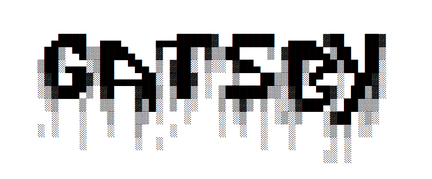
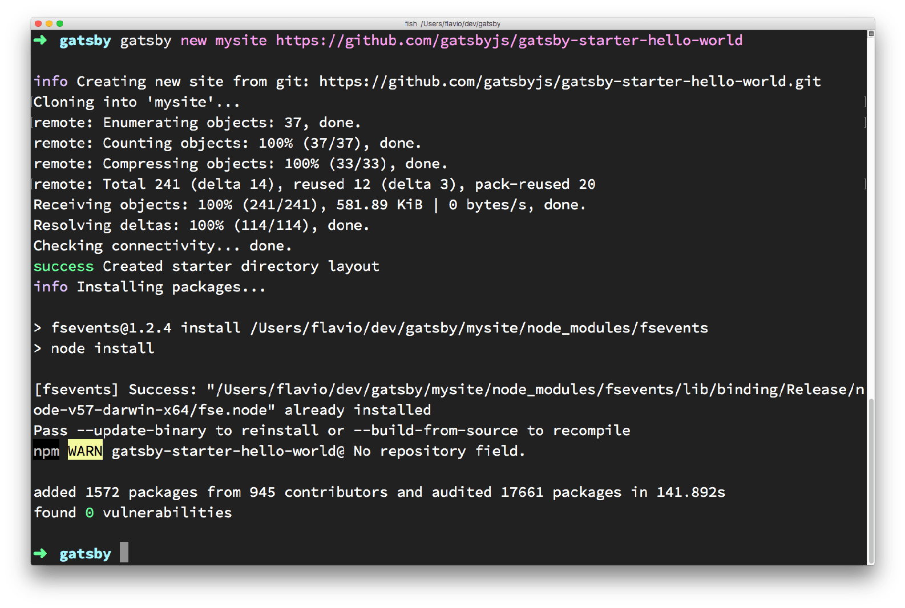
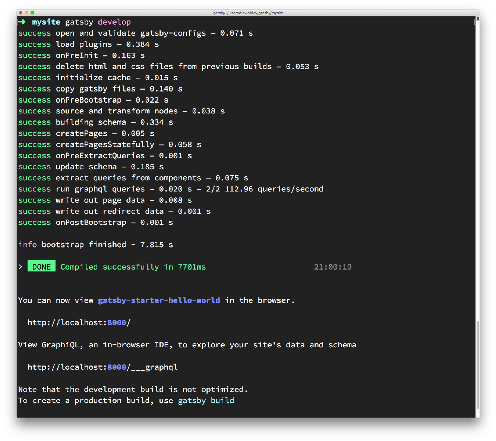
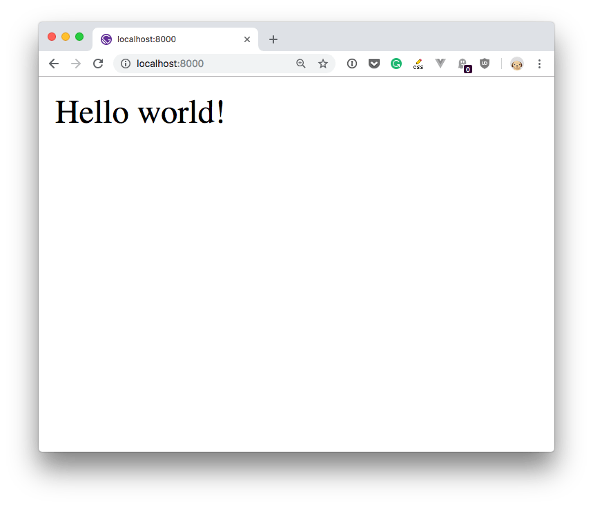
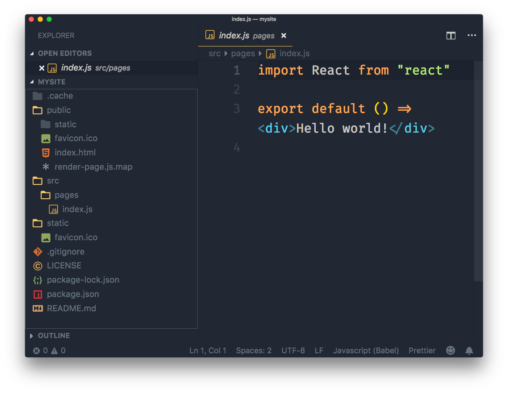
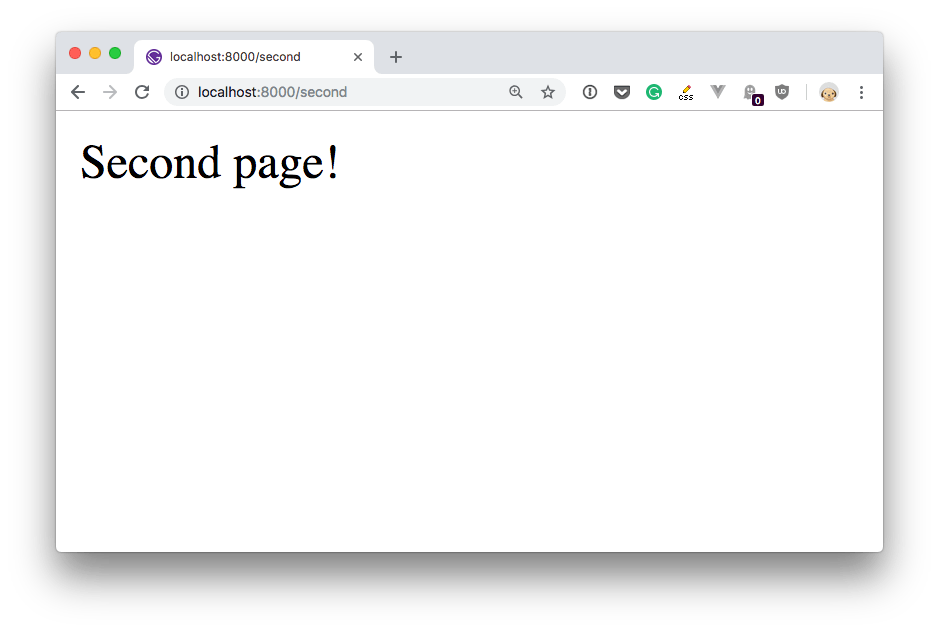

Gatsby is a platform for building apps and websites using React.
It is one of the tools that allow you to build on a set of technologies and practices collectively known as JAMstack.
Gatsby is one of the cool kids in the Frontend Development space right now. Why? I think the reasons are:
All those are great points, and Gatsby is definitely worth a look.
With Gatsby, your applications are built using React components.
The content you'll render in a site is generally written using Markdown, but you can use any kind of data source, like an headless CMS or a web service like Contentful.
Gatsby builds the site, and it's compiled to static HTML which can be deployed on any Web Server you want, like Netlify, AWS S3, GitHub Pages, regular hosting providers, PAAS and more. All you need is a place that serves plain HTTP pages and your assets to the client.
I mentioned Progressive Web Apps in the list. Gatsby automatically generates your site as a PWA, with a service worker that speeds up page loading and resource caching.
You can enhance the functionality of Gatsby via plugins.
You can install Gatsby by simply running this in your terminal:
npm install -g gatsby-cli
This installs the gatsby CLI utility.
(when a new version is out, update it by calling this command again)
You create a new "Hello World" site by running
gatsby new mysite https://github.com/gatsbyjs/gatsby-starter-hello-world
This command creates a brand new Gatsby site in the mysite folder, using the starter available at https://github.com/gatsbyjs/gatsby-starter-hello-world.

A starter is a sample site that you can build upon. Another common starter is default, available at https://github.com/gatsbyjs/gatsby-starter-default.
After the terminal has finished installing the starter, you can run the website by calling
cd mysite
gatsby develop
which will start up a new Web Server and serve the site on port 8000 on localhost.

And here is our Hello World starter in action:

If you open the site you created with your favorite code editor (I use VS Code), you'll find there are 3 folders:
.cache, an hidden folder that contains the Gatsby internals, nothing you should change right nowpublic, which contains the resulting website once you build itsrc contains the React components, in this case just the index componentstatic which will contain the static resources like CSS and images
Now, making a simple change to the default page is easy, just open src/pages/index.js and change "Hello world!" to something else, and save. The browser should instantly hot reload the component (which means the page does not actually refresh, but the content changes - a trick made possible by the underlying technology).
To add a second page, just create another .js file in this folder, with the same content of index.js (tweak the content) and save it.
For example I created a second.js file with this content:
import React from 'react'
export default () => <div>Second page!</div>
and I opened the browser to http://localhost:8000/second:

You can link those pages by importing a Gatsby-provided React component called Link:
import { Link } from "gatsby"
and using it in your component JSX:
<Link to="/second/">Second</Link>
You can import any CSS file using a JavaScript import:
import './index.css'
You can use React styling:
<p style={{
margin: '0 auto',
padding: '20px'
}}>Hello world</p>
Gatsby provides lots of things out of the box, but many other functionalities are provided by plugins.
There are 3 kind of plugins:
Some commonly used plugins are:
head tag contentA Gatsby plugin is installed in 2 steps. First you install it using npm, then you add it to the Gatsby configuration in gatsby-config.js.
For example you can install the Catch Links plugin:
npm install gatsby-plugin-catch-links
In gatsby-config.js (create it if you don't have it, in the website root folder), add the plugin to the plugins exported array:
module.exports = {
plugins: ['gatsby-plugin-catch-links']
}
That's it, the plugin will now do its job.
Once you are done tweaking the site and you want to generate the production static site, you will call
gatsby build
At this point you can check that it all works as you expect by starting a local Web Server using
gatsby serve
which will render the site as close as possible to how you will see it in production.
Once you build the site using gatsby build, all you need to do is to deploy the result contained in the public folder.
Depending on the solution you choose, you'll need different steps here, but generally you'll push to a Git repository and let the Git post-commit hooks do the job of deploying.
Here are some great guides for some popular hosting platforms.